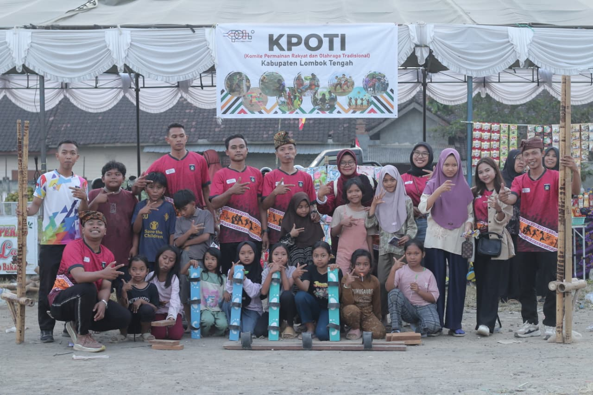

Di era digital ini, layar gadget seringkali menggantikan lapangan bermain. KPOTI Lombok Tengah hadir untuk mendokumentasikan, melestarikan, dan memperkenalkan kembali permainan tradisional Indonesia kepada generasi muda. Kami percaya bahwa permainan tradisional bukan sekadar mainan, tapi warisan nilai karakter, kerjasama, dan kegembiraan sederhana.
Kami adalah sekelompok pemuda yang rindu akan masa kecil yang penuh tawa di sore hari. Website ini dibuat sebagai perpustakaan digital agar siapa saja, di mana saja, bisa belajar cara memainkan permainan nusantara.
Hubungi kami melalui Instagram:
@kpoti_lomboktengah